- 트리는 "글자수 ≤ 500?" 같은 질문으로 자료를 나눠 예측하고, 깊어질수록 과적합 위험이 커진다.
- Random Forest는 서로 다른 트리를 동시에 여러 개 만들어 평균, XGBoost는 앞의 부족한 점을 순서대로 보정한다.
- 교차검증은 train을 5조각으로 돌려 가며 평가해 한 번의 분할에 덜 흔들리게 한다. 전처리도 fold 안에서 다시 학습!
본문에는 핵심 코드 한두 줄만 남겼어요.
📦 필요한 패키지
| 패키지 (pip 이름) | 뭐 하는 애? | 코드에서 |
|---|---|---|
scikit-learn | 트리·랜덤포레스트·교차검증·중요도·Pipeline | from sklearn.tree import DecisionTreeClassifier 등 |
xgboost | 그래디언트 부스팅 트리 (sklearn처럼 fit/predict) | from xgboost import XGBClassifier, XGBRegressor |
numpy, pandas | 배열 계산, 비교표·중요도표 만들기 | import numpy as np, import pandas as pd |
joblib | 학습한 Pipeline 저장·복원 (scikit-learn과 함께 설치됨) | import joblib |
🔧 설치 · 확인
python --version
python -m pip show scikit-learn xgboost
python -m pip install "xgboost==3.1.3" # xgboost가 없을 때만 (강의 검증 버전 예시)
python -c "import xgboost; print(xgboost.__version__)"
python -m pip checktree_method="hist", device="cpu", n_jobs=1로 CPU에서 돌려요. CUDA 설치는 선행 조건이 아니에요..venv를 그대로 쓰고 xgboost만 추가하세요. 강의 실행 검증 환경: Python 3.13.5 · scikit-learn 1.8.0 · XGBoost 3.1.3 (PDF 6쪽).n_jobs=1로 하지? — 병렬로 돌리면 빠르지만, 작업 순서가 매번 조금씩 달라져 결과 재현이 어려워질 수 있고 노트북 CPU를 모두 잡아먹어요. 수업에선 같은 숫자가 다시 나오는 것이 속도보다 중요해서 1로 고정해요.이거 어디에 써?
트리 계열은 표(엑셀 같은 데이터)에서 가장 많이 쓰는 모델이에요. 특히 "왜 이렇게 예측했어?"를 조건문으로 설명할 수 있다는 게 장점이에요.
| Decision Tree | Random Forest | XGBoost | |
|---|---|---|---|
| 모양 | 트리 1개 | 트리 여러 개 (독립) | 트리 여러 개 (순차) |
| 결합 | — | 확률·수치 평균 | 기본 점수에 보정값 누적 |
| 장점 | 규칙을 따라가기 쉬움 | 다양성으로 흔들림 감소 | 손실을 차근차근 줄임 |
input_chars·allowed_tools·task_type·priority), 분류 정답 failed(주 지표: 실패 클래스 F1), 회귀 정답 elapsed_ms(RMSE, ms), 금지 입력(failed·elapsed_ms·retry_count·status·request_id), 고정 분할 train 60 · valid 20 · test 20. 수업용 합성 요청 100건이라 실서비스 성능을 대표하지 않아요.① Decision Tree — 질문으로 나눠 예측
한 번에 한 특성의 조건을 검사해 자료를 둘로 나눠요. 질문은 사람이 쓰는 게 아니라 학습 자료로 자동 선택돼요.
| 용어 | 뜻 |
|---|---|
| 루트 | 첫 질문 |
| 내부 노드 | 다음 질문들 |
| 잎(leaf) | 최종 예측 위치 — 분류는 잎의 클래스 분포, 회귀는 잎의 y 평균 |
어떤 질문이 좋은가? — 나눈 뒤에 덜 섞여 있을수록 좋은 질문이에요. 섞인 정도를 Gini 불순도로 재요.
Gini = 1 − (성공 비율)² − (실패 비율)²
성공 3 · 실패 3 → 1 − 0.5² − 0.5² = 0.5 (최대로 섞임)
성공 3 · 실패 0 → 1 − 1² − 0² = 0 (깨끗함)
분할 후 Gini = 왼쪽 Gini × (왼쪽 비율) + 오른쪽 Gini × (오른쪽 비율)
감소량 = 부모 Gini − 분할 후 Gini ← 가장 많이 줄이는 질문을 고른다
예) 후보 A "≤ 250": 왼쪽 2건(0,0) Gini 0 · 오른쪽 4건(0,1,1,1) Gini 0.375
→ 분할 후 = 0×2/6 + 0.375×4/6 = 0.25, 감소량 0.5 − 0.25 = 0.25
후보 B "≤ 500": 왼쪽 3건(0,0,0) · 오른쪽 3건(1,1,1) 모두 Gini 0 → 감소량 0.5 ✅ 선택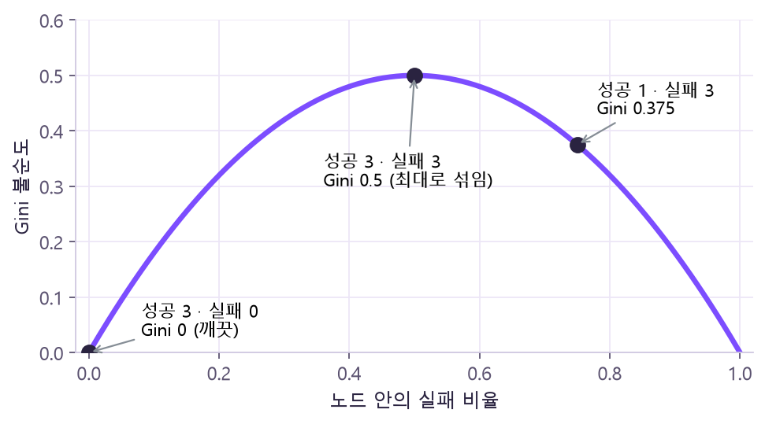
아래 6개 요청의 기준선을 움직여 보세요. 점을 클릭하면 성공 ↔ 실패가 바뀌어요.
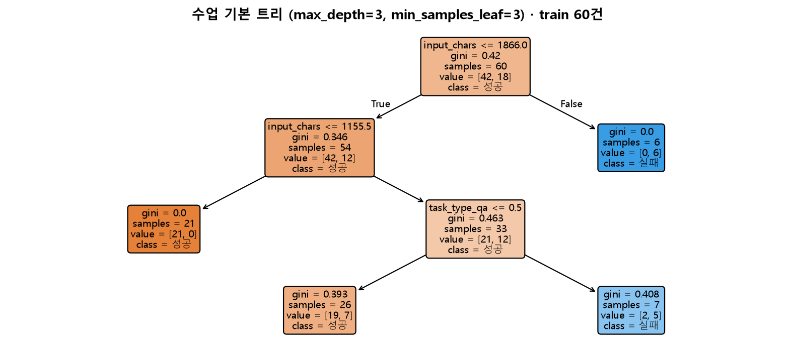
max_depth=3, min_samples_leaf=3)를 그대로 그렸어요. 상자마다 질문·gini·samples(행 수)·value([성공, 실패] 수)가 있고, 주황은 성공 쪽, 파랑은 실패 쪽, 색이 진할수록 한 클래스로 깨끗해요. 🤔 왜? 루트에서 "input_chars ≤ 1866" 한 번에 실패만 6건인 잎(gini 0)을 떼어 냈어요. 그 질문이 그 순간 Gini를 가장 많이 줄였기 때문이에요(탐욕적 선택). 잎이 4개라 위 표의 get_n_leaves() = 4와 일치하고, 각 잎의 클래스 비율이 곧 predict_proba 값이에요(예: 오른쪽 아래 잎 실패 5/7 ≈ 0.71).tree = DecisionTreeClassifier(max_depth=1, random_state=42).fit(X, [0, 0, 0, 1, 1, 1])
reg = DecisionTreeRegressor(max_depth=1, random_state=42).fit(X, [100, 120, 140, 700, 720, 740])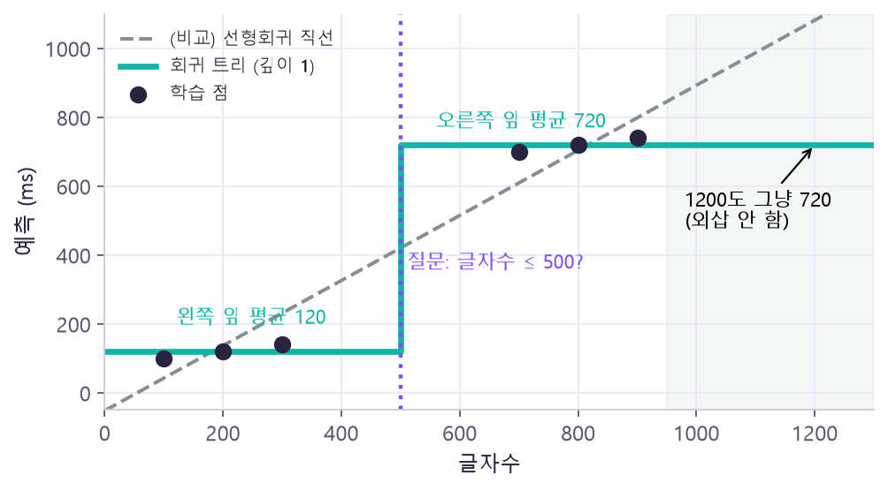
② 복잡도와 과적합
깊은 트리는 학습 자료의 작은 차이, 우연한 잡음까지 나눠 버려요. train 점수만 높고 새 자료 점수가 낮으면 과적합을 의심해요.
| max_depth | train F1 | valid F1 |
|---|---|---|
| 1 | 0.500 | 0.286 |
| 3 | 0.710 | 0.333 |
| 5 | 0.882 | 0.500 |
| None (제한 없음) | 1.000 | 0.500 |
(min_samples_leaf=1로 둔 진단 실험) 제한 없는 트리는 train을 완벽히 외웠지만 valid는 깊이 5보다 나아지지 않았어요. 한 번의 분할만 보고 "최적 깊이"를 단정하진 않아요. 이 표는 깊이별 실험 결과이지, epoch에 따른 학습 곡선이나 미래 성능 보장이 아니에요.
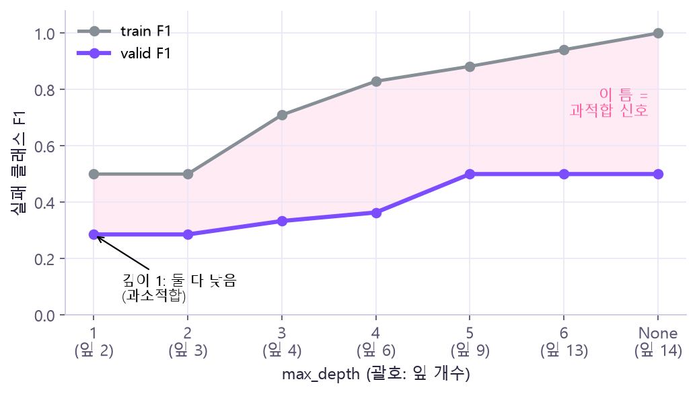
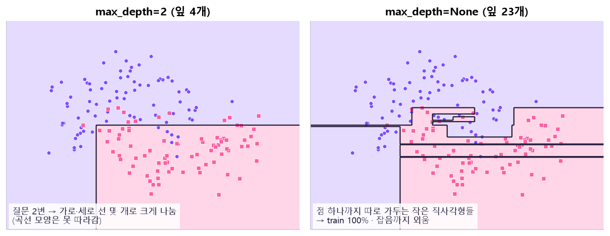
model = build(DecisionTreeClassifier(max_depth=3, min_samples_leaf=3, random_state=42), scale="none")
model.fit(X_train, y_train)③ Random Forest — 서로 다른 트리들의 평균
중복 허용 추출→ 분할마다 특성 후보도 랜덤
max_features→ 결합
분류: 확률 평균 · 회귀: 예측 평균
같은 실수를 반복하는 트리 100개보다, 서로 다른 관점을 가진 트리를 묶는 게 핵심이에요.
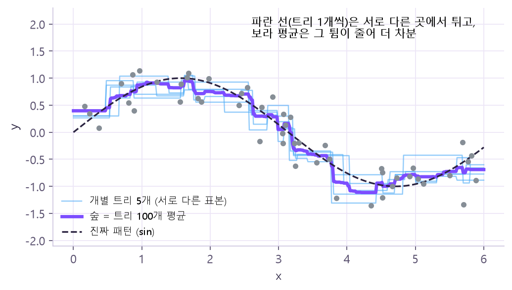
| 가상 트리 3개의 실패 확률 | 계산 | 결과 |
|---|---|---|
| 0.51 · 0.51 · 0.01 | 클래스만 다수결: 실패 2표 | 실패(1) |
| 확률을 먼저 평균: (0.51+0.51+0.01)/3 = 0.343 | 성공(0) ← sklearn 방식 |
n_estimators=100은 깊이 100이 아니라 트리 개수예요. 회귀 숲은 각 트리의 숫자 예측을 평균해요.rf = RandomForestClassifier(n_estimators=100, max_depth=4, min_samples_leaf=2, max_features="sqrt", random_state=42, n_jobs=1)
forest = build(rf).fit(X_train, y_train)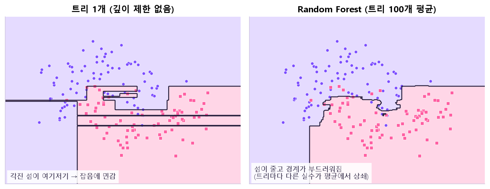
④ 특성 중요도 — 모델이 무엇에 기댔나
| MDI (불순도 기반) | 순열 중요도 (Permutation) | |
|---|---|---|
| 아이디어 | 각 분기에서 줄어든 불순도 × 그 분기가 다룬 자료 비중을 특성별로 합산 → 여러 트리 평균 | 한 열을 행끼리 섞었을 때 점수가 얼마나 떨어지나 (기준 F1 − 섞은 F1, 여러 번 반복) |
| 계산 자료 | 학습 자료 | 평가 자료 (valid 등) |
| 재학습 | — | 안 함 (학습된 모델 고정) |
| 값 | 합 = 1 (분기 없으면 모두 0) | 점수 감소량 · 음수도 가능 |
| 대상 열 | 변환 후 8개 열 (더미 포함) | 원본 4개 열 (범주 더미 묶음째) |
task_type)만 행끼리 뒤섞였고, 글자수·priority는 그대로예요. 같은 학습된 모델로 두 표를 예측해 F1 차이를 재요. 🤔 왜? 섞어도 그 열의 값 종류·비율은 똑같고 정답과의 짝만 끊겨요. 모델이 그 열에 기대고 있었다면 짝이 끊긴 순간 점수가 떨어지고, 안 쓰고 있었다면 거의 안 변하죠. 그 낙폭이 "이 모델이 그 열에 얼마나 기댔나"예요.- 중요 ≠ 원인. 영향의 방향(+/−)도 알려주지 않아요.
- 값 종류가 많은 특성은 분할 후보가 많아 MDI가 높게 보일 수 있어요.
- 서로 비슷한(상관된) 입력은 기여를 나눠 가질 수 있어요.
- 순위를 보고 평가셋에 맞춰 열을 반복 삭제하면 선택 편향이 커져요. 열 선택도 학습 fold 안에서.
- valid 20행처럼 작으면 순위·부호가 불안정해요. 음수가 나와도 바로 삭제하지 않아요.
- 현재 Forest의 valid F1은 0.222예요. 예측을 잘 못하는 모델의 중요도를 업무 우선순위로 단정하지 않아요.
mdi = pd.Series(forest["model"].feature_importances_, index=names)
perm = permutation_importance(forest, X_valid, y_valid, scoring="f1", n_repeats=20, random_state=42, n_jobs=1)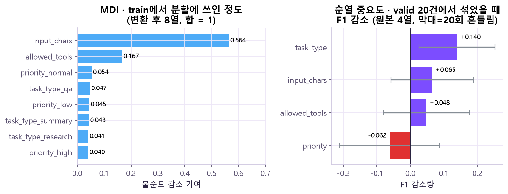
⑤ XGBoost — 부족한 부분을 순서대로 보정
예: 정답 평균→ 보정 트리
지금 틀린 방향을 학습→ 예측 갱신
이전 + 학습률 × 보정→ 반복
순차적으로
y = [100, 120, 200, 220]
처음 = [160, 160, 160, 160] (평균) MSE 2600
잔차 = [-60, -40, 40, 60] ← 깊이1 트리가 이걸 학습
보정 후 = 처음 + 0.5 × 보정 = [135, 135, 185, 185] MSE 725DecisionTreeRegressor 명령어 사전에서 자세히 →X = np.array([[1], [2], [3], [4]])
y = np.array([100., 120., 200., 220.])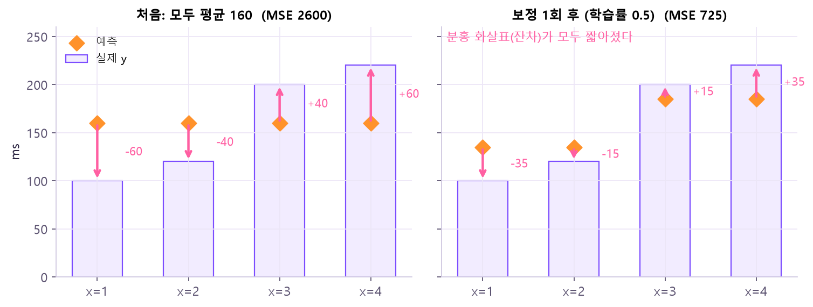
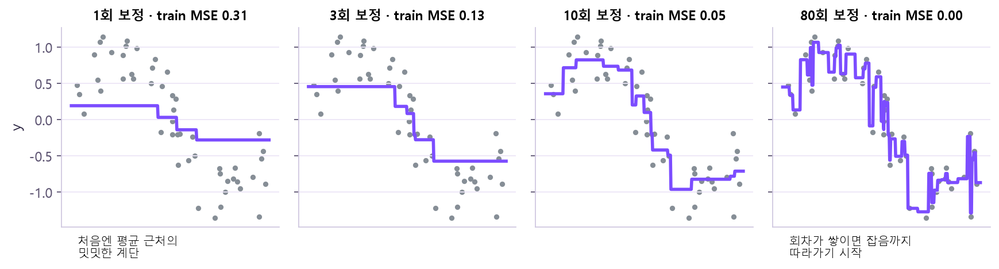
| 관점 | Random Forest (Bagging) | XGBoost (Boosting) |
|---|---|---|
| 학습 관계 | 트리를 독립적으로 | 현재 예측을 보정하며 순차 추가 |
| 다양성·보정 | 표본·특성 후보의 무작위성 | 손실의 기울기·곡률에 따른 보정 |
| 결합 | 평균 | 기본 점수에 보정값 누적 |
| 핵심 조절 | 트리 수·깊이·잎 크기·특성 수 | 깊이·학습률·회차·표본/특성 비율·규제 |
xgb = XGBClassifier(n_estimators=80, learning_rate=0.05, max_depth=2, …, objective="binary:logistic", tree_method="hist")
model = build(xgb).fit(X_train, y_train) # sklearn Pipeline에 그대로 연결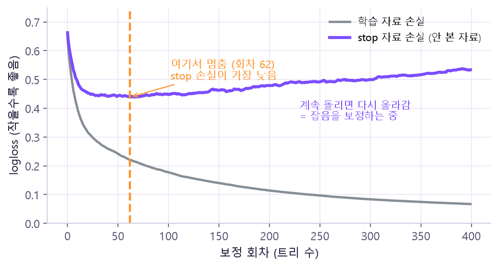
⑥ 교차검증 — 한 번의 분할에 덜 의존하기
valid 20건 한 번만 보면 운이 크게 작용해요. train 60건을 5조각(12건씩)으로 나눠, 돌아가며 1조각으로 평가하고 4조각(48건)으로 학습해요.
| 회차 | 조각1 | 조각2 | 조각3 | 조각4 | 조각5 |
|---|---|---|---|---|---|
| 1 | 평가 | 학습 | 학습 | 학습 | 학습 |
| 2 | 학습 | 평가 | 학습 | 학습 | 학습 |
| 3 | 학습 | 학습 | 평가 | 학습 | 학습 |
| 4 | 학습 | 학습 | 학습 | 평가 | 학습 |
| 5 | 학습 | 학습 | 학습 | 학습 | 평가 |
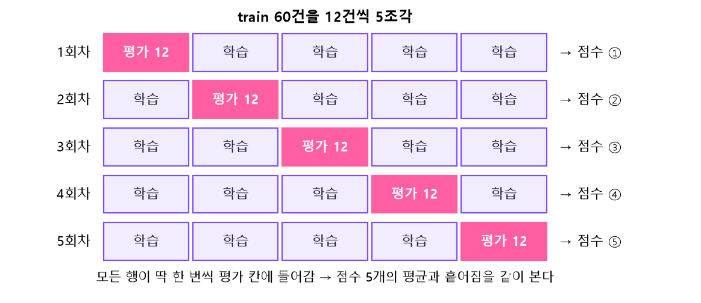
| 자료 | 오늘의 역할 |
|---|---|
| train 60 | 5-fold로 후보 비교 (각 fold에서 전처리도 학습) |
| valid 20 | 이미 쓴 진단 자료 — 오류·기존 결과 비교 |
| test 20 | 오늘도 보관, 최종 선택 후 확인 |
❌ train 60 전체에 전처리 fit → 변환된 배열을 5-fold로 나눔 (평가 행의 중앙값이 이미 학습에 섞임)
✅ 아직 fit 안 한 Pipeline 통째를
cross_validate에 전달 → fold마다 학습 48건으로 전처리·모델 fit → 평가 12건은 transform·predict만
CLS_CV = StratifiedKFold(n_splits=5, shuffle=True, random_state=42) # 분류: 실패 비율 유지
cv = cross_validate(build(rf), X_train, y_train, cv=CLS_CV, scoring="f1", return_train_score=True, …)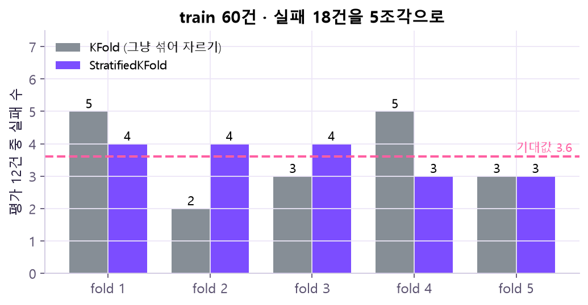
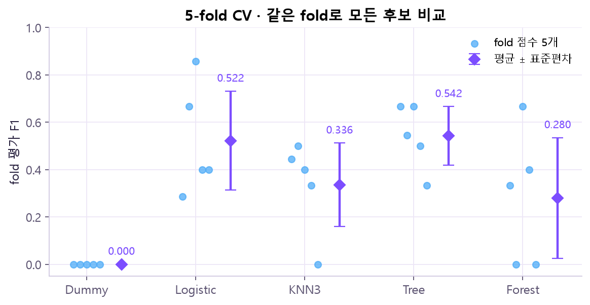
지표로 진단하기
| 분류 모델 | CV F1 평균 ± 편차 | valid F1 | valid FP / FN |
|---|---|---|---|
| Dummy | 0.000 ± 0.000 | 0.000 | 0 / 6 |
| Logistic | 0.522 ± 0.209 | 0.333 | 4 / 4 |
| KNN3 | 0.336 ± 0.176 | 0.545 | 2 / 3 |
| Tree | 0.542 ± 0.124 | 0.333 | 4 / 4 |
| Forest | 0.280 ± 0.254 | 0.222 | 2 / 5 |
| XGB | 0.500 ± 0.123 | 0.182 | 4 / 5 |
| 회귀 모델 | CV RMSE 평균 ± 편차 (ms) | valid RMSE | valid MAE |
|---|---|---|---|
| Dummy | 606.18 ± 100.84 | 658.75 | 541.26 |
| Linear | 639.83 ± 57.72 | 640.00 | 551.80 |
| KNN15 | 598.85 ± 91.21 | 641.79 | 530.06 |
| Tree | 599.63 ± 96.12 | 719.00 | 632.03 |
| Forest | 624.01 ± 96.97 | 690.37 | 600.34 |
| XGB | 655.79 ± 92.17 | 700.02 | 609.34 |
오늘의 잠정 기준은 분류 CV 평균 F1 최대 → Tree(0.542), 회귀 CV 평균 RMSE 최소 → KNN15(598.85ms). 반대 증거도 함께 적어요: valid 최고는 KNN3(0.545)·Linear(640.00ms), Tree는 valid 실패 6건 중 4건을 놓침. 비교 시 전처리는 모델에 맞춘 학습 절차 전체(선형/KNN은 수치 standard, 트리 계열은 스케일링 없음)를 비교해요.
| 이렇게 나오면 | 의심할 것 |
|---|---|
| train F1 = 1.000, valid·CV는 낮음 | 과적합 → 깊이·잎 크기·회차 제한 |
| fold마다 점수가 0 ~ 0.667로 크게 흔들림 | 평가 자료(12건) 구성에 민감 → 평균 하나로 가리지 말 것 |
| CV 1등과 valid 1등이 다름 | 소표본 · 순위 변동 → 유리한 점수만 골라 보고하지 않기 |
| CV RMSE 차이 0.78ms (KNN15 598.85 vs Tree 599.63) | 사실상 동률 → 단순한 후보 우선, 추가 검증 |
⑦ 입력 검사와 저장 — 새 범주 vs 누락 열
새 요청이 들어올 때 두 상황은 다르게 다뤄요. 처음 보는 범주(예: task_type="translation")는 학습된 규칙대로 처리해 8열을 유지하고, 필수 열이 빠진 입력(예: priority 없음)은 예측 전에 명확한 오류로 막아요.
handle_unknown="ignore"로 "그 범주 더미는 전부 0"이라고 처리할 수 있어요. 하지만 열 자체가 없으면 모델이 판단할 근거가 사라진 것이라, 임의 값으로 자동 추측해서 채우면 틀린 예측을 조용히 내보내게 돼요. 그래서 시끄럽게 멈추는 쪽이 안전해요.new["task_type"], new["priority"] = "translation", "urgent" # 학습에 없던 범주
print(model["pre"].transform(new).shape) # (2, 8) ← 기존 8열 유지joblib.dump(model, path)
restored = joblib.load(path) # 자신이 방금 만든 파일만원본 자료
- 강의:
20261027화_머신러닝_트리_앙상블_교차검증_Day7 (3).pdf— ① 트리 9~16쪽 · ② 과적합 17~24쪽 · ③ Random Forest 25~33쪽 · ④ 특성 중요도 34~43쪽 · ⑤ XGBoost 44~55쪽 · ⑥ 교차검증 56~70쪽 · ⑦ 검사·저장 72~73, 77쪽 - 공식 문서: scikit-learn · Decision Trees · Ensemble methods · Permutation importance · Cross-validation · XGBoost Parameters